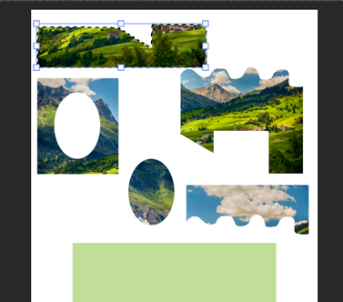

На Главную
Виртуальный тренажер: Работа с инструментами выделение в Photoshop
Для этого:
- Переместите курсор инструмента «Прямолинейное лассо» на холст и щелкните, чтобы задать начальную точку области выделения.
- Перетащите, чтобы нарисовать прямой отрезок для начала выделения объекта. Щелкните, чтобы задать конечную точку первого отрезка. Продолжайте рисовать следующие отрезки до тех пор, пока объект не будет полностью выделен.
- Чтобы замкнуть границу выделения, переместите курсор инструмента «Прямолинейное лассо» к начальной точке и щелкните ее.
- С помощью инструмента «Перемещение» (V) передвиньте пазл на зеленое поле. 